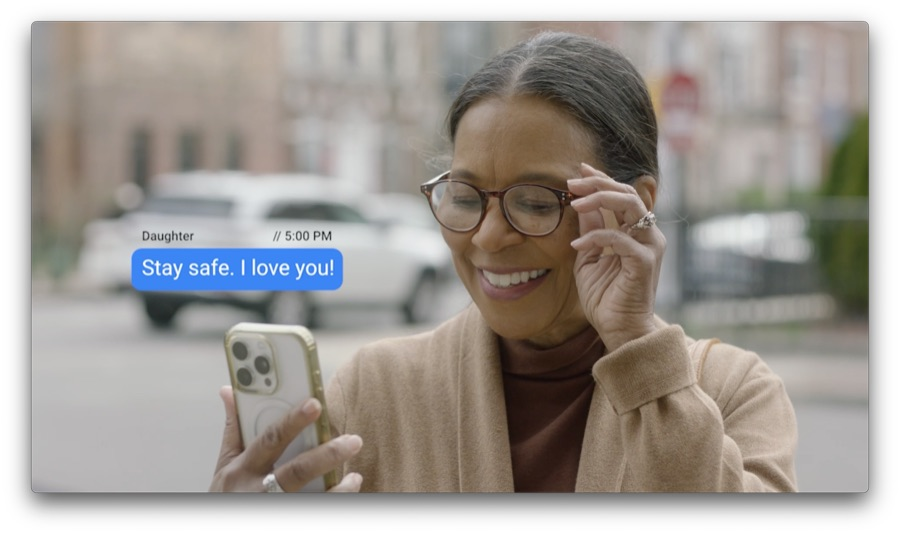
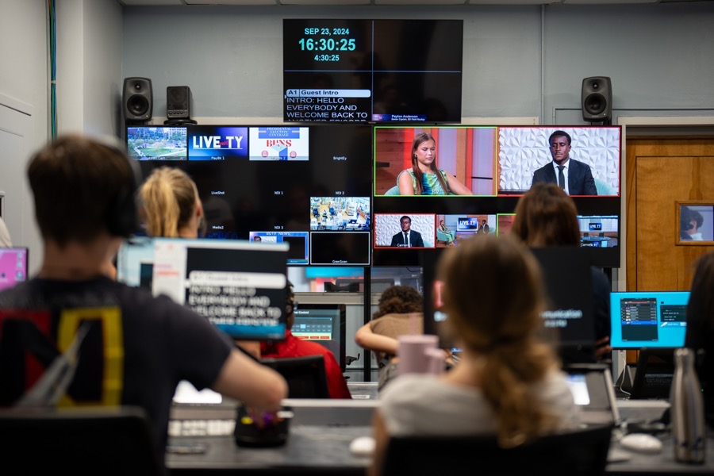
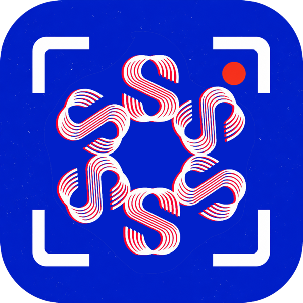
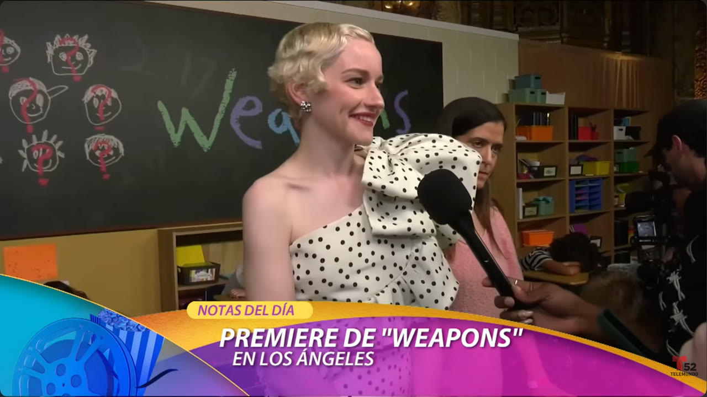
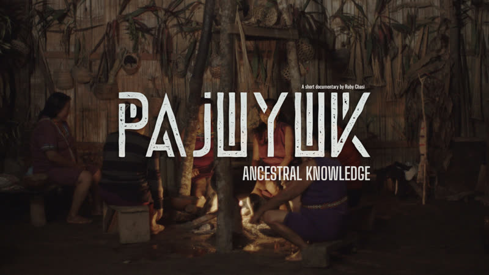
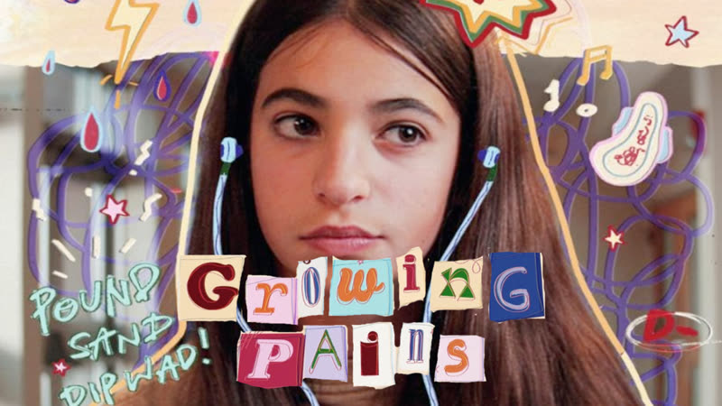
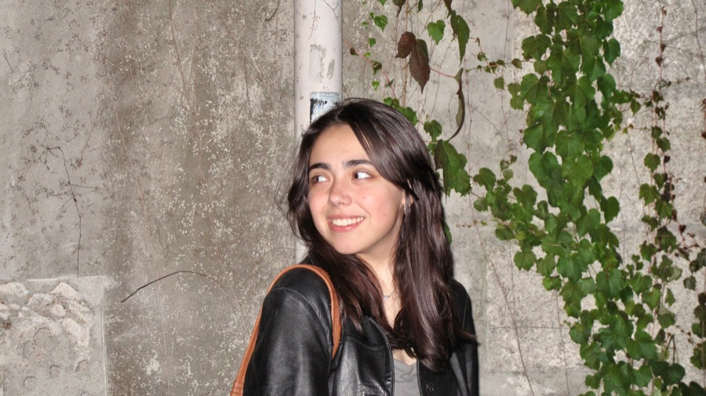

06:12 · CALL TIME
Sofía González
Irigoyen
Creative producer, editor, and filmmaker. This site is one production day. Scroll, and the sun moves.
Productora creativa, editora y cineasta. Este sitio es un día de producción. Haz scroll y el sol se mueve.
08:30 · THE AGENCY WAKES08:30 · LA AGENCIA DESPIERTA
AdvertisingEl anuncio
Editor on the NFL sponsorship campaign: 9:16 masters for Meta, Pinterest and Snapchat, athlete interview episodes, string-out through client review. Plus branch-signage brand screens in five aspect ratios, retouching a fix an outside vendor couldn't deliver, and Super Bowl concepting.
Editora de la campaña NFL: masters 9:16, episodios de entrevistas, del string-out a la revisión con cliente. Además: pantallas de sucursal en cinco formatos, retoque que un proveedor externo no pudo resolver, y conceptos para el Super Bowl.

Six deliverables across social and broadcast; primary client contact, vetting meetings, all pre- and post-production logistics. "Above and Beyond" AdLabbie.
Seis entregas; contacto directo con clientes y toda la logística de pre y post.
A SAG-AFTRA anti-AI ad mockup, made by the person who now builds AI pipelines. Both are honest.
Un anuncio anti-IA hecho por quien ahora construye pipelines de IA. Las dos cosas son honestas.
11:00 · ON THE TIMELINE11:00 · EN EL TIMELINE
EditingEl corte

Head of the editing department: led the editor team, assigned roles across ten weekly deliverables, and built all show graphics and the intro animation.
Jefa del departamento de edición: lideré al equipo, asigné roles en diez entregas semanales, y construí todos los gráficos y la animación de entrada.
Real MVP athlete episodes and US Bank brand screens at Supergood. Two videos for the NBC interns page during Telemundo 52. The Supergood interns social video. Editor first, whatever the credit says.
Episodios de Real MVP y pantallas de US Bank en Supergood. Dos videos para la página de interns de NBC durante Telemundo 52. El video social de interns de Supergood. Editora primero, diga lo que diga el crédito.
13:00 · BETWEEN DELIVERIES13:00 · ENTRE ENTREGAS
The machineLa máquina

A desktop app for AI film production, designed and built solo in two weeks — logo included. Paste a script and it breaks it into a shot list; a guided prompt builder turns each shot into generation-ready prompts; a tracker logs every generation with per-shot cost so producers can estimate and bill clients accurately. Demoed to Supergood leadership; now part of the pipeline.
Una app de escritorio para producción con IA, diseñada y construida sola en dos semanas — logo incluido. Pegas un guion y lo desglosa en shot list; un constructor guiado convierte cada toma en prompts; un registro guarda cada generación con costo por toma para presupuestar y facturar. Presentada a la dirección de Supergood; ahora es parte del pipeline.
in-app captures coming to this card
capturas de la app llegan pronto a esta tarjeta
15:00 · ON AIR15:00 · AL AIRE
BroadcastLa transmisión
Producer of the longest-running continuously produced student soap opera in the United States. Multicam, weekly, relentless. BUTV10.
Productora de la telenovela estudiantil más antigua de Estados Unidos. Multicámara, semanal, sin tregua.

Marketing intern on the lifestyle show floor: booking, on-location segments, red carpets, VOs and SOTs — plus two videos for the NBC interns page.
Práctica en el piso del show: booking, segmentos en locación, alfombras rojas — y dos videos para la página de interns de NBC.
Live TV in Santiago: Sabores, Zona de Estrellas, ¡Hola Chile! On-set producer for a full episode. Plus The Wire (director) and Good Morning BU (writer, correspondent).
TV en vivo en Santiago; productora en set de un episodio completo. Más The Wire (directora) y GMBU (guionista, corresponsal).
17:45 · GOLDEN HOUR, LAST SETUP17:45 · HORA DORADA, ÚLTIMA TOMA
The setEl set
Every role on a set: gaffer, grip, sound, camera, director, producer. This is the hour that trained all the others.
Todos los puestos de un set: gaffer, grip, sonido, cámara, dirección, producción. Esta es la hora que entrenó a todas las demás.
Kerlin Campos' thesis film: an immigrant family under threat, made by a majority-immigrant crew. Creative producer, not just line. Swept BU's Redstone Festival — Best Picture, Editing, Sound, Screenplay, Production Design, Actor. Cilect submission. Poster design: hers.
La tesis de Kerlin Campos: una familia inmigrante bajo amenaza, hecha por un equipo mayoritariamente inmigrante. Productora creativa. Arrasó en Redstone. El poster también es suyo.

Post team, and the film's US-premiere representative at True/False. The Napuruna midwives of the Ecuadorian Amazon, renewing their ancestral wisdom. Also screened at Festival de Málaga.
Equipo de post y representante del estreno en EE.UU. en True/False. Las parteras Napuruna del Alto Napo.

Birds Eye View (director, showcase pick). Lucky Streak (narrative doc). Don't Forget to Swing Wilbur — OCD as an everyday horror film.
Birds Eye View (directora). Lucky Streak. Swing Wilbur: el TOC como película de terror cotidiana.
19:38 · THE SUN LEAVES, THE MOON ARRIVES19:38 · EL SOL SE VA, LA LUNA LLEGA
Two lights.
One body.Dos luces.
Un cuerpo.
21:00 · THE SCREENING BEGINS21:00 · LA FUNCIÓN EMPIEZA
The screeningLa función
00:00 · EVERYONE'S ASLEEP00:00 · TODOS DUERMEN
BackgroundMi historia

Born in Mexico City, raised between Miami and Mexico. Painter first — five years of gouache, ink, and line portraits (@sofirichof.art) before film took over. Miami Dade College, then Boston University: Film & TV production and advertising, Blue Chip Award, COM Fellow, HSF Scholar. The painter never left: she designs the posters, letters the titles, retouches the frames. Two trained voices, opera and mariachi. The mission, in her own words: to create space for stories that deserve to be seen, heard, and felt.
Nacida en la Ciudad de México, criada entre Miami y México. Pintora primero — cinco años de gouache, tinta y retratos a línea (@sofirichof.art) antes del cine. Miami Dade College, luego Boston University: producción de cine y TV y publicidad. La pintora nunca se fue: hace los posters, rotula los títulos, retoca los cuadros. Dos voces entrenadas: ópera y mariachi. La misión, en sus palabras: crear espacio para historias que merecen ser vistas, escuchadas y sentidas.
00:45 · EVERY CREDIT, NOT JUST THE HIGHLIGHTS00:45 · CADA CRÉDITO, NO SOLO LO DESTACADO
The full recordEl expediente completo
| 2026 | Si Solamente | PRODUCER | Best Picture, Redstone · Cilect submission |
| 2026 | Pajuyuk | POST · US PREMIERE REP | True/False · Festival de Málaga |
| 2026 | US Bank × NFL — Real MVP | EDITOR | Supergood |
| 2026 | US Bank — brand screens & retouch | EDITOR · RETOUCH | branch signage, five ratios |
| 2026 | Studio S | DESIGNER · DEVELOPER | internal tool, built in two weeks |
| 2026 | Supergood interns social video | EDITOR | |
| 2026 | Si Solamente — poster | DESIGN | |
| 2026 | Filmmaking reel | EDITOR | |
| 2026 | AdLab — Capital One · MassDOT · Affordable Art Fair | VIDEO PRODUCER | six deliverables · "Above and Beyond" |
| 25–26 | Bay State | PRODUCER | longest-running student soap in the US, BUTV10 |
| 2025 | Telemundo 52 — Acceso Total | MARKETING INTERN | NBCU Los Angeles · 2 videos, NBC interns page |
| 2025 | Only Humans Can | SPEC | SAG-AFTRA mock |
| 2025 | Joe Is Your Man | SPEC | Trader Joe's campaign |
| 2025 | Intro to Directing | TEACHING ASSISTANT | BU COM |
| 2025 | Field Production Services | EQUIPMENT & RENTAL | BU COM |
| 24–25 | The Wire | DIRECTOR | BUTV10 |
| 24–25 | Live with TY | HEAD OF EDITING | led edit team · ten weekly deliverables · all graphics |
| 2024 | La Red · TVI — Santiago | PRODUCTION | Sabores · Zona de Estrellas · on-set producer, full episode |
| 2024 | COED | HEAD OF SOUND | camera & sound PA, fall 2023 |
| 2024 | Birds Eye View | DIRECTOR | showcase pick |
| 2024 | Lucky Streak | DOCUMENTARY | |
| 2024 | Alike Loves | SHORT | |
| 2024 | BosMUN XXIV | CHIEF MARKETING DIRECTOR | + event photographer |
| 23–25 | Good Morning BU | WRITER · CORRESPONDENT | interview packages |
| 23–26 | BU College of Communication | MEDIA ASSISTANT | ticketing & camera operation |
| 2023 | Don't Forget to Swing Wilbur | WRITER · DIRECTOR | |
| 2022 | NED SpA | PROJECT INTERN | Discovery Channel adaptation for Latin America |
| 2022 | La Red — ¡Hola Chile! | INTERN | Santiago |
| 22–23 | Miami Dade College | SGA SENATOR · MEDIA | Presidential Scholar · founded a book club, obviously |
| 18–now | Stars that Act | ASSISTANT DIRECTOR | youth theatre · Junior Theatre Festival, Atlanta |
| 17–22 | sofirichof.art | PAINTER | the first body of work |
01:30 · THE HOUR AFTER WRAP01:30 · LA HORA DESPUÉS DEL WRAP
Noche y Media
The name is an hour: the extra half of the night after everyone else wraps — when the renders finish, the personal work gets made, and the day quietly becomes tomorrow. That's the hour this whole site has been scrolling toward. The person still up at 1:30 is the one you write to.
El nombre es una hora: la media noche extra después de que todos terminan — cuando los renders acaban, el trabajo personal se hace, y el día se vuelve mañana sin avisar. Hacia esa hora venía este sitio desde el principio. La persona que sigue despierta a la 1:30 es a quien le escribes.
CDMX · MIA · BOS · NYC — made at 1:30amhecho a la 1:30